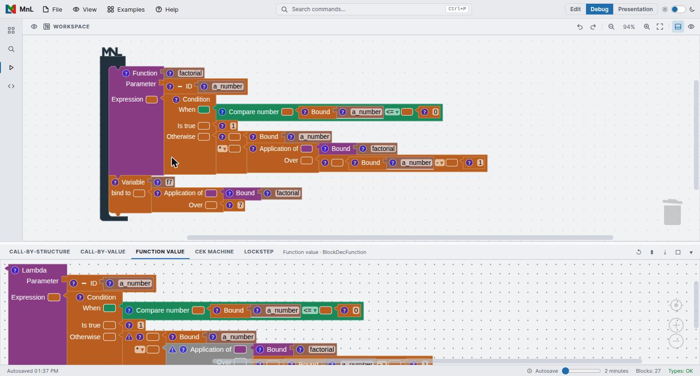
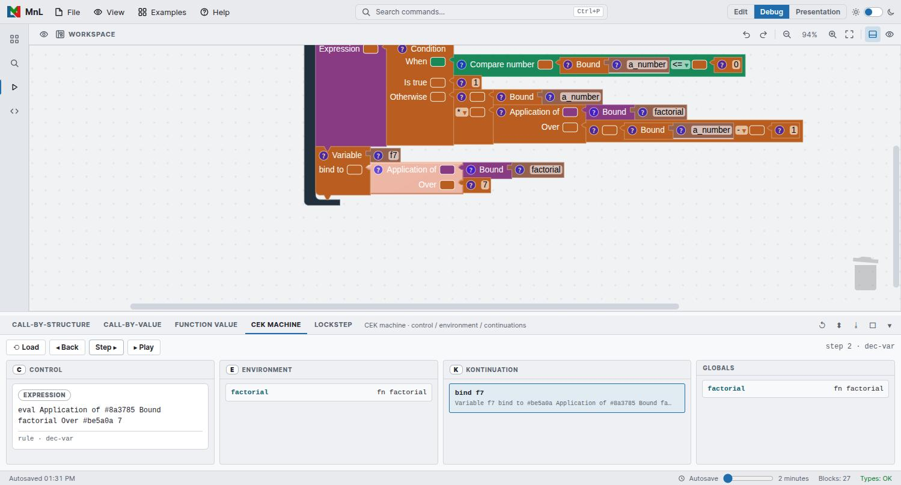
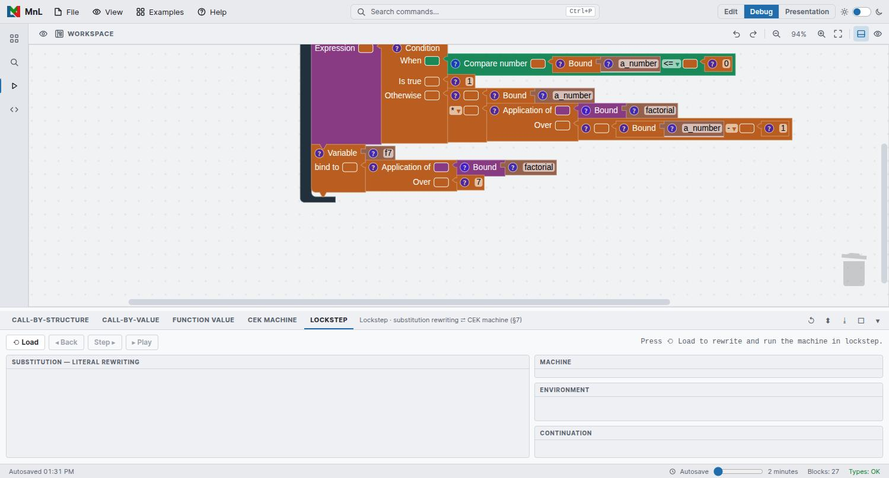

Watching a program run
MnL’s program visualization tool is called Tarsius. It was designed so that evaluation happens in the visual workspace — the steps are drawn as blocks, not printed as text. That makes it possible to show two things which are awkward to show in a text language: what a function value actually is, and how an application reduces.
The visualization panel
The panel sits along the bottom of the window. Open it with Ctrl+J, from the activity bar, or by switching to the Debug perspective, which arranges the workspace above it. It carries five views:
| View | Scope | Shows |
|---|---|---|
| Call-by-Structure | A selected application | Substitution steps that keep the original parameter block structure. |
| Call-by-Value | A selected application | Substitution steps where the parameter is replaced by its evaluated value. |
| Function Value | A selected function | The lambda that the function denotes, drawn as blocks. |
| CEK Machine | The whole program | Control, environment and continuation, one machine step at a time. |
| Lockstep | The whole program | Substitution rewriting and the machine, advanced side by side. |
The first three views need a selection: right-click an Application block and choose Call-by-Structure or Call-by-Value, or right-click a Function to see its value. The CEK Machine and Lockstep views need no selection — press Load and they step the whole program.
Function value
When a block’s type is function, right-click it and choose
Function value. The panel renders the value — for a named function, the lambda
it stands for.

factorial, drawn as the lambda it denotes.This is the quickest way to understand a partially applied function: apply one argument, then look at the value of what comes back.
Call-by-structure and call-by-value
Right-click an Application block to reduce it. The view lists each substitution step in order from top to bottom, with its value. MnL’s beta reduction uses eager evaluation; the two views differ in what they do to the parameter:
- Call-by-Structure keeps the original parameter block structure, which makes it easy to trace where a value came from.
- Call-by-Value replaces the parameter structure with a new one built from the parameter’s value after evaluation.
If you learned MnL on an earlier build, these two were called Beta Reduction and Beta Reduction — CBV in the block menu. Beta Reduction is now Call-by-Structure; Beta Reduction — CBV is now Call-by-Value. The semantics are unchanged — only the names and the place they appear.
The CEK machine
New in version 5. Where the reduction views rewrite a selected redex, the CEK machine runs the whole program as an abstract machine and lets you step it. Press Load, then Step to advance, Back to retreat, or Play to run.

dec-var rule. The
block being evaluated is highlighted in the workspace above.The machine state is split across four panels:
| Panel | Holds |
|---|---|
| C Control | What the machine is working on right now — the expression being evaluated, and the name of the rule being applied. |
| E Environment | The bindings in scope, each name against its value. |
| K Kontinuation | The stack of work still to be done once the current expression produces a value. |
| Globals | The top-level bindings of the program. |
The step counter and the current rule name appear at the right of the control strip —
step 2 · dec-var in the figure above. As you step, MnL highlights the
corresponding block in the workspace, so the machine state and the program stay connected.
Substitution shows you what a program reduces to. A machine shows you how an
implementation would get there — including the continuation stack, which is invisible in a
pure rewriting account. Recursion is the case where the difference is most instructive: load the
Factorial example and watch K grow on the way down and unwind on the
way back up.
Lockstep
Also new in version 5, and the view that ties the other two accounts together. Lockstep advances substitution rewriting and the CEK machine at the same time, so you can read one against the other.

The left panel is Substitution — literal rewriting. The right-hand column carries Machine, Environment and Continuation. Press Load to rewrite and run the machine together, then step through both.
Panel tools
The icons at the right of the view strip apply to whichever view is open:
- Re-run — recompute the current view after you change the program.
- Arrange — lay the rendered blocks out again.
- Download screenshot — save the view as an image, which is what the figures in this chapter are.
- Maximize / Hide — give the panel the whole window, or put it away.
You can also drag the divider between the workspace and the panel to resize it.
Every view needs a program that type-checks. If a view stays empty, check that the status bar reads Types: OK and that no block still carries a warning triangle.